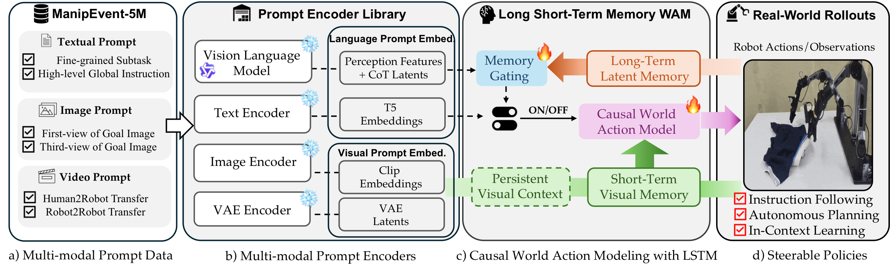
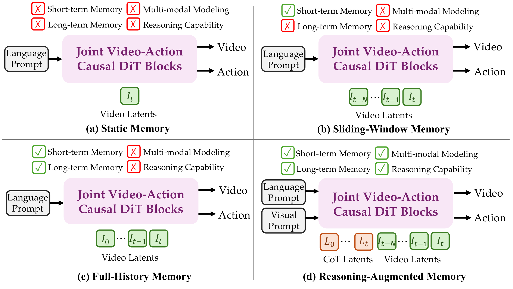
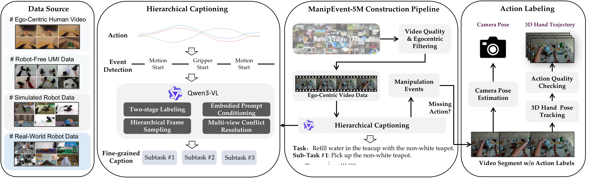
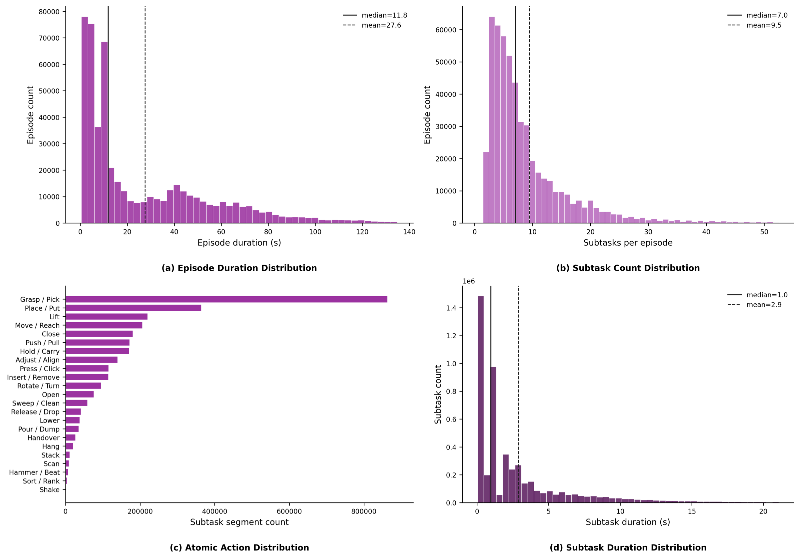
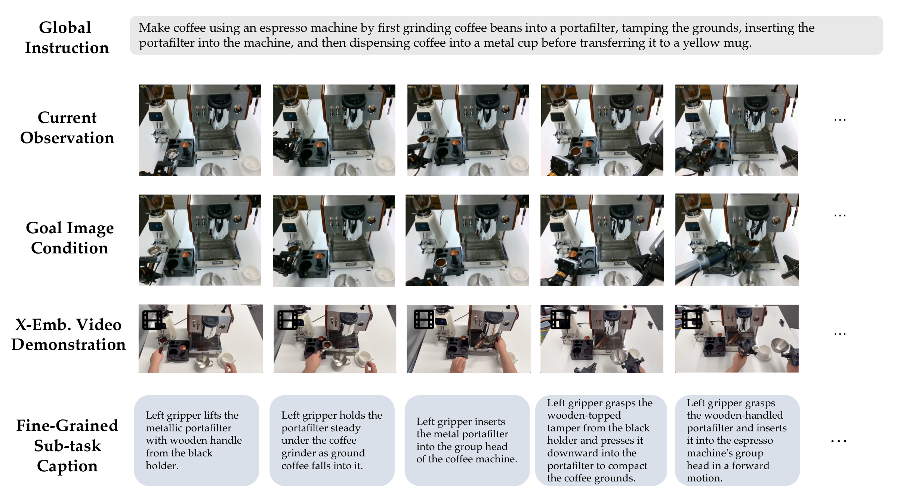

Long Short-Term Memory
Progress-aware event memory tracks global history, the active local event, and semantic boundaries, while causal visual memory preserves recent interaction dynamics.
Empowering Steerable World Action Modeling with Reasoning-Augmented Memory
Manifold AI · WorldScape Team
Abstract
World Action Models (WAMs) offer a promising paradigm for robotic manipulation by jointly modeling visual state transitions and robot actions. However, existing WAMs are constrained by limited temporal context, coarse episode-level language supervision, and predominantly text-only conditioning, which hinder task-progress tracking and fine-grained language-video-action grounding while limiting visual-context reasoning and cross-embodiment transfer.
In this paper, we introduce WorldScape Policy 2.0, a controllable WAM with reasoning-augmented long short-term memory. Its causal short-term visual memory supplies recent observations as DiT prefill to preserve local interaction dynamics, while its long short-term event memory organizes historical VLM outputs into global-history, local-active, and event-boundary representations for progress-aware retrieval. The retrieved history augments perception and autoregressively generated planning tokens, yielding an implicit subgoal condition for autonomous planning; semantic forcing further transfers event-level instruction semantics into this latent planning pathway.
To establish fine-grained multimodal controllability, we construct ManipEvent-5M, an event-grounded embodied pretraining dataset containing nearly 5 million event segments with aligned action trajectories, episode-level task instructions, segment-level subtask captions, goal images, and video demonstrations. These designs provide a unified interface for autonomous planning from high-level instructions and controllable execution from fine-grained text, goal-image, or video-context prompts. Experiments in both simulation and real-world platforms demonstrate superior capabilities in long-horizon autonomous planning, fine-grained instruction following and in-context adaptation.
Contributions
A controllable World Action Model that combines short-term visual dynamics, long-term event memory, latent subgoal reasoning, and event-grounded pretraining for long-horizon robotic manipulation.
Progress-aware event memory tracks global history, the active local event, and semantic boundaries, while causal visual memory preserves recent interaction dynamics.
Retrieved history augments autoregressive planning tokens. Semantic forcing transfers event-level instruction meaning into the latent autonomous-planning pathway.
Fine-grained text, first- or third-view goal images, and video demonstrations steer one unified causal world-action interface across embodiments.
Nearly five million event segments align robot actions, hierarchical instructions, goal images, demonstrations, and future visual transitions for scalable pretraining.
Overview

Method
WorldScape Policy 2.0 separates temporal context into two complementary streams: event-level reasoning memory for task progress and frame-level visual memory for local interaction dynamics. Retrieved history augments VLM planning latents, while causal DiT prefill preserves recent observations and persistent visual prompts.
A three-stage curriculum first learns event-grounded multimodal control, then introduces memory mid-training with semantic forcing, and finally adapts the shared world-action model to downstream autonomous planning, instruction following, and visual-prompted interaction.


Staged Training
Learn fine-grained language-video-action grounding from ManipEvent-5M while establishing causal short-term visual memory and multimodal prompt control.
Introduce VLM latent planning, global-history retrieval, local-active memory, event-boundary anchors, and semantic forcing for progress-aware autonomous planning.
Adapt the shared world-action model to downstream robot embodiments, instruction following, visual prompting, and real-world interactive manipulation.
Dataset
ManipEvent-5M converts heterogeneous manipulation sources into event-level samples. Each trajectory is segmented into ordered subgoals and annotated with action trajectories, global instructions, fine-grained captions, goal images, and video prompts.



Capability Demonstration
Progress-aware reasoning helps avoid repeated actions in multi-stage tasks.
Shell-game tasks require the policy to retrieve visual history and infer the hidden state before acting.
Video-context demonstrations guide action transfer across human and robot embodiments.
Fine-grained text prompts steer atomic manipulation behavior with event-level control.
Evaluation
| Method | Clean | Random | Average |
|---|---|---|---|
| π0.5 | 82.7% | 76.8% | 79.8% |
| Fast-WAM | 91.9% | 91.8% | 91.9% |
| Motus | 88.7% | 87.0% | 87.9% |
| LingBot-VA | 92.9% | 91.6% | 92.3% |
| WorldScape Policy 2.0 | 94.3% | 94.2% | 94.3% |
| Capability | Task | π0.5 | DreamZero | Ours |
|---|---|---|---|---|
| Autonomous Planning | Folding Clothes | 60% | 45% | 75% |
| Folding Box | 65% | 55% | 75% | |
| Memory Reasoning | Shell Game | 30% | 50% | 75% |
| Skill Transfer | Stacking Blocks | 20% | 20% | 70% |
| Instruction Following | Clean Table | 70% | 60% | 80% |
Autonomous rollouts use memory to infer active subgoals from global instructions.
Fine-grained language instructions elicit precise response and execution abilities.
Citation
@article{worldscape_policy_2026,
title={WorldScape Policy 2.0: Empowering Steerable World Action Modeling with Reasoning-Augmented Memory},
author={Manifold AI - WorldScape Team},
year={2026},
url={https://manifoldai-research.github.io/WorldScape-Policy/}
}